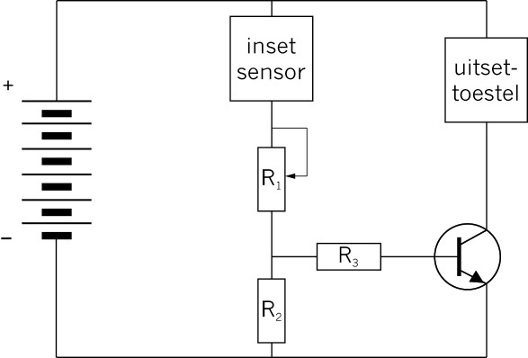

<div class="container">
  <div id="contents" class="col-md-12 main-content"><h1 xmlns="http://www.w3.org/1999/xhtml" id="toc-id-16">Bou en teken elektroniese stroombane</h1>
    <div xmlns="http://www.w3.org/1999/xhtml" class="frame-7"></div>

      <div xmlns="http://www.w3.org/1999/xhtml" class="frame-7"></div>
    <figcaption xmlns="http://www.w3.org/1999/xhtml">

    <p class="x--caption para-style-override-43">Figuur 1: ’n Deel van die stroombaan van ’n radio
</p>
</figcaption><p xmlns="http://www.w3.org/1999/xhtml" class="x--caption"><span></span> </p>
<figcaption xmlns="http://www.w3.org/1999/xhtml">
    <p class="x--caption">Figuur 2: Al hierdie toestelle bevat elektroniese stroombane
</p>
</figcaption><b xmlns="http://www.w3.org/1999/xhtml">Jy gaan die volgende benodig:
</b><li xmlns="http://www.w3.org/1999/xhtml" class="x--Body-text-bullet"> ’n LED,</li>

      <li xmlns="http://www.w3.org/1999/xhtml" class="x--Body-text-bullet"> ’n 470
      <span>Ω</span> resistor,</li>

      <li xmlns="http://www.w3.org/1999/xhtml" class="x--Body-text-bullet"> ’n skakelaar,</li>

      <li xmlns="http://www.w3.org/1999/xhtml" class="x--Body-text-bullet"> vier 1,5 V selle in series, of ’n 9 V battery, en</li>

      <li xmlns="http://www.w3.org/1999/xhtml" class="x--Body-text-bullet"> elektriese geleidraad met kaaimansklemme vir die koppelings.</li>
    <span xmlns="http://www.w3.org/1999/xhtml"> 

       </span> 
          
    <figcaption xmlns="http://www.w3.org/1999/xhtml">

    <p class="x--Body-Text"><span class="char-style-override-5">Figuur 3: ’n Stroombaan met ’n LED, ’n battery, ’n skakelaar en ’n resistor.
</span></p>
</figcaption><b xmlns="http://www.w3.org/1999/xhtml">Jy gaan die volgende benodig:
</b><li xmlns="http://www.w3.org/1999/xhtml" class="x--Body-text-bullet">’n LAR,</li>

      <li xmlns="http://www.w3.org/1999/xhtml" class="x--Body-text-bullet"> vier 1,5 V selle in ’n sel houer,
en</li>

      <li xmlns="http://www.w3.org/1999/xhtml" class="x--Body-text-bullet">’n gonser.</li>
    <div xmlns="http://www.w3.org/1999/xhtml" class="frame-7"></div>

      <figcaption xmlns="http://www.w3.org/1999/xhtml">
        <p class="x--caption"><a id="Anchor-15"/>Figuur 4: ’n Stroombaan waar die stroom beheer word deur ’n
lig-afhanklike resistor.
</p>
      </figcaption>
      
<i xmlns="http://www.w3.org/1999/xhtml">uitsettoestel</i> aan
en af te skakel sonder om van ’n skakelaar gebruik te maak. In plaas daarvan om ’n
skakelaar te gebruik wat met die hand beheer word, gebruik hierdie tipe stroombaan
’n <i xmlns="http://www.w3.org/1999/xhtml">inset sensor</i> in kombinasie met ’n transistor om die uitsettoestel outomaties aan of
af te skakel, afhangende van die meting van ’n toestel by die inset sensor.
<i xmlns="http://www.w3.org/1999/xhtml">beheerstroombaan</i> genoem omdat een
stroombaan ’n ander stroombaan beheer. In die geval waar die
transistor saam met ’n
sensor soos ’n LAR gebruik
word, beheer die basis-
emittor stroombaan die
groter kollektor-emittor
stroombaan.

<div xmlns="http://www.w3.org/1999/xhtml" class="frame-7"></div>

      <figcaption xmlns="http://www.w3.org/1999/xhtml">
        <p class="x--caption">Figuur 5: Die stroombaandiagram vir die beheerstroombaan
</p>
      </figcaption>
    <li xmlns="http://www.w3.org/1999/xhtml" class="x--Body-text-bullet"> Indien ’n <i>verlaging</i> in die inset sensor die uitsettoestel moet aanskakel, sal
resistor 2 en die inset sensor soos in figuur 5 gerangskik wees. Kyk weer na die
stroombaan vir ’n dag/nagskakelaar wat gebruik maak van ’n lig-afhanklike
skakelaar (LAR) op bladsy 48.
</li>

      <li xmlns="http://www.w3.org/1999/xhtml" class="x--Body-text-bullet"> Indien ’n <i>verhoging</i> in die weerstand van die inset sensor die uitsettoestel
moet aanskakel, moet resistor 2 en die inset sensor andersom as in figuur 5
gerangskik wees. Kyk na die stroombaan van die hitte-geaktiveerde skakelaar
wat ’n negatiewe-temperatuur koëffisiënt (NTK) termistor gebruik op bladsy 51.
</li>
    <p xmlns="http://www.w3.org/1999/xhtml" class="x--Body-Text"><span></span> </p>
<figcaption xmlns="http://www.w3.org/1999/xhtml">
    <p class="x--caption">Figuur 6: ’n Stelsel diagram van ’n beheerstroombaan
</p>
</figcaption><div xmlns="http://www.w3.org/1999/xhtml" class="frame-7"></div>

      <figcaption xmlns="http://www.w3.org/1999/xhtml">
        <p class="x--caption">Figuur 7</p>
      </figcaption>
    <li xmlns="http://www.w3.org/1999/xhtml" class="x--Body-text-bullet">’n battery wat bestaan uit 6 selle in serie gekoppel,</li>

      <li xmlns="http://www.w3.org/1999/xhtml" class="x--Body-text-bullet"> ’n inset sensor om die temperatuur te meet,</li>

      <li xmlns="http://www.w3.org/1999/xhtml" class="x--Body-text-bullet"> ’n veranderlike resistor om die temperatuur te stel vir wanneer die alarm moet
afgaan,</li>

      <li xmlns="http://www.w3.org/1999/xhtml" class="x--Body-text-bullet"> ’n uitsettoestel wat ’n geluid sal maak wanneer dit te warm raak, en</li>

      <li xmlns="http://www.w3.org/1999/xhtml" class="x--Body-text-bullet"> ’n transistor om die uitsettoestel aan te skakel wanneer dit te warm word.
</li>
    <span xmlns="http://www.w3.org/1999/xhtml"></span>  
        <figcaption xmlns="http://www.w3.org/1999/xhtml"><p class="x--caption">Figuur 8: ’n Stroombaandiagram wat die verskillende komponente van ’n brandalarm wys.
</p>
</figcaption><i xmlns="http://www.w3.org/1999/xhtml">spesifikasies</i> vir die weerstande van
komponente genoem.
<li xmlns="http://www.w3.org/1999/xhtml" class="x--Body-text-bullet"> R1 = 700
      tot 1400 kΩ (veranderlike
 resistor)</li>

      <li xmlns="http://www.w3.org/1999/xhtml" class="x--Body-text-bullet"> R2 = 820
      Ω</li>

      <li xmlns="http://www.w3.org/1999/xhtml" class="x--Body-text-bullet"> R3 = 1
      kΩ</li>

      <li xmlns="http://www.w3.org/1999/xhtml" class="x--Body-text-bullet"> inset
      sensor: 10 kΩ</li>
    <b xmlns="http://www.w3.org/1999/xhtml">Jy het die volgende materiale nodig om die stroombaan te bou:</b><li xmlns="http://www.w3.org/1999/xhtml" class="x--Body-text-bullet"> ’n 9 volt-battery met ’n verbindingsklem met rooi (+) en swart (–) drade,</li>

      <li xmlns="http://www.w3.org/1999/xhtml" class="x--Body-text-bullet"> geleierdraad met ’n kaaimanklem,</li>

      <li xmlns="http://www.w3.org/1999/xhtml" class="x--Body-text-bullet"> ’n 10
      k<span>Ω</span> NTK termistor,</li>

      <li xmlns="http://www.w3.org/1999/xhtml" class="x--Body-text-bullet"> ’n 700 tot 1
      400 k<span>Ω</span> veranderlike resistor;</li>

      <li xmlns="http://www.w3.org/1999/xhtml" class="x--Body-text-bullet"> ’n 820
      <span>Ω</span> en ’n 1 k<span>Ω</span>
      resistor,</li>

      <li xmlns="http://www.w3.org/1999/xhtml" class="x--Body-text-bullet"> ’n
      <i>npn</i> transistor,
      en</li>

      <li xmlns="http://www.w3.org/1999/xhtml" class="x--Body-text-bullet"> ’n
      gonser</li>
    <b xmlns="http://www.w3.org/1999/xhtml">Foutopsporing
</b><li xmlns="http://www.w3.org/1999/xhtml" class="x--Body-text-bullet"> toets om te seker te maak dat die battery nie pap is nie,</li>

      <li xmlns="http://www.w3.org/1999/xhtml" class="x--Body-text-bullet"> toets weer al jou komponente,</li>

      <li xmlns="http://www.w3.org/1999/xhtml" class="x--Body-text-bullet"> volg die stroom om jou stroombaan met jou vinger om seker te maak dat jy al
die komponente korrek gekoppel het, en</li>

      <li xmlns="http://www.w3.org/1999/xhtml" class="x--Body-text-bullet">  maak seker dat jy die transistor op die regte manier gekoppel het.</li>
    <b xmlns="http://www.w3.org/1999/xhtml">Jy benodig die volgende:</b><li xmlns="http://www.w3.org/1999/xhtml" class="x--Body-text-bullet"> vier 1,5 V selle in serie, of ’n 9 V-battery,</li>

      <li xmlns="http://www.w3.org/1999/xhtml" class="x--Body-text-bullet"> twee LEDs,</li>

      <li xmlns="http://www.w3.org/1999/xhtml" class="x--Body-text-bullet"> ’n 470
      Ω resistor,</li>

      <li xmlns="http://www.w3.org/1999/xhtml" class="x--Body-text-bullet"> ’n 
      1 000 <span class="char-style-override-7">µ</span>F kapasitor, en</li>

      <li xmlns="http://www.w3.org/1999/xhtml" class="x--Body-text-bullet"> ’n SPDT-skakelaar.</li>
    
    <figcaption xmlns="http://www.w3.org/1999/xhtml">Figuur 9: ’n Tydvertragingstroombaan</figcaption>
<p xmlns="http://www.w3.org/1999/xhtml" class="x--Body-opener">Indien jy probeer om ’n meer gekompliseerde
stroombaan te bou deur komponente te koppel
met geleidraad en kaaimansklemme, sal baie
drade mekaar oorkruis en die stroombaan sal
morsig lyk; soos toue wat gekoek is.
</p>

      <p xmlns="http://www.w3.org/1999/xhtml" class="x--Body-opener">Om ’n gekompliseerde stroombaan netjieser en
kleiner te maak, word die meeste stroombane op
borde gebou, soos “broodborde”, “strookborde”,
en “gedrukte stroombaanborde” (GSB).
</p>

      <p xmlns="http://www.w3.org/1999/xhtml" class="x--Body-opener">Figuur 10 hieronder wys ’n eenvoudige LED
stroombaan, soos die een van jy in afdeling 5.1
gebou het, maar hier is dit op ’n strookbord
gebou. Let op dat daar geen verbindingsdrade
gebruik is om hierdie stroombaan te bou nie!
Die rede hiervoor is dat daar aan die onderkant
van die strookbord parallelle koperstroke is
wat die gate in elke kolom koppel. Dit maak dit
moontlik die stroombaan te bou sonder om van
stukke draad gebruik te maak.
</p>
   

    <figure xmlns="http://www.w3.org/1999/xhtml">
      <p class="x--Body-Text"><span></span> </p>
<figcaption>
      <p class="x--caption">Figuur 10: ’n Eenvoudige LED stroombaan wat op 
  ’n strookbord gebou is 
</p>
</figcaption></figure><figure xmlns="http://www.w3.org/1999/xhtml">
      <p class="x--Body-indent"><span></span></p><figcaption><p><span class="char-style-override-5">Figuur 11: Een moontlike uitleg van die
eenvoudige LED stroombaan op ’n strookbord.
</span></p></figcaption></figure>
   

 
      <p xmlns="http://www.w3.org/1999/xhtml" class="x--Body-opener">Figuur 11 wys een moontlike uitlegplan 
om die eenvoudige LED stroombaan op ’n 
  strookbord te bou. Die koperstroke onder die 
  bord is nie sigbaar van bo af nie, daarom is 
  die koperstroke op die skets van die uitleg in 
  arsering geteken om te wys dat jy dit nie van 
  bo af kan sien nie. 
</p>

      <p xmlns="http://www.w3.org/1999/xhtml" class="x--Body-opener">Die pyle op figuur 11 help jou om te verstaan
hoe die stroom deur die koperstroke agter op
die bord vloei. Die stroom vloei in die rigting
van die pyle.
</p>

      <p xmlns="http://www.w3.org/1999/xhtml" class="x--Body-opener">Die konnektor van elke komponent word aan
die koperstroke vas soldeer aan die onderkant
van die strookbord. Dit is om seker te maak dat daar goeie elektriese kontak met die
koperstroke is.

</p>

      <p xmlns="http://www.w3.org/1999/xhtml" class="x--Body-opener">Soldering word met lood gedoen omdat lood
’n goeie elektriese geleier is en ook omdat dit
’n lae smeltpunt het. Dit is dus maklik en vinnig
om lood met ’n soldeerbout te smelt.
</p>

      <p xmlns="http://www.w3.org/1999/xhtml" class="x--Body-opener">Broodborde en gedrukte stroombaanborde
is ander tipe borde wat gebruik word om
gekompliseerde stroombane te bou; hulle
het ook koperstroke aan die agterkant, maar
hierdie stroke is op ’n ander manier rangskik
as die van ’n trookbord.Figuur 13 wys die
koppelings aan die agterkant van ’n broodbord.
</p>
 

    <figure xmlns="http://www.w3.org/1999/xhtml">
      <p class="x--caption"><span></span> </p>
<figcaption>
      <p class="x--caption">Figuur 12: Soldering van komponente aan die agterkant van ’n strookbord.
</p>
</figcaption></figure>
      <figure xmlns="http://www.w3.org/1999/xhtml">
        <span> 

         </span>
      <figcaption>

      <p class="x--caption">Figuur 13: Die voor- en agterkant van ’n broodbord
</p>
    </figcaption></figure>

     
      <p xmlns="http://www.w3.org/1999/xhtml" class="x--Body-opener">Met ’n broodbord is dit nie nodig om die
koppelings te soldeer nie, aangesien elke gat
in die broodbord ’n veertjie het wat die drade
styf vasgryp om goeie elektriese kontak te
verseker.
</p>

      <p xmlns="http://www.w3.org/1999/xhtml" class="x--Body-opener">Byna alle vervaardigde elektroniese toestelle
gebruik gedrukte stroombaanborde, waar die
koperstroke aan die agterkant enige patroon
kan aanneem. Dit maak dit moontlik om baie
klein gekompliseerde stroombane te maak.
</p>
   

    <figure xmlns="http://www.w3.org/1999/xhtml">
      
        <span> 

        </span>
     <figcaption>

      <p class="x--caption para-style-override-1">Figuur 14: Die voor- en agterkant van ’n gedrukte stroombaanbord
</p>
    </figcaption></figure>
 <span xmlns="http://www.w3.org/1999/xhtml">Die volgende hoofstuk is jou Mini-PAT vir die kwartaal. Jy gaan leer hoe ’n
elektroniese stroombaan gebruik kan word om ’n ander stroombaan, met ’n veel
groter stroom, te beheer. Jy gaan ’n toestel bou deur albei stroombane te gebruik
en jy gaan dit daarna toets.
</span>
  </div>
</div>